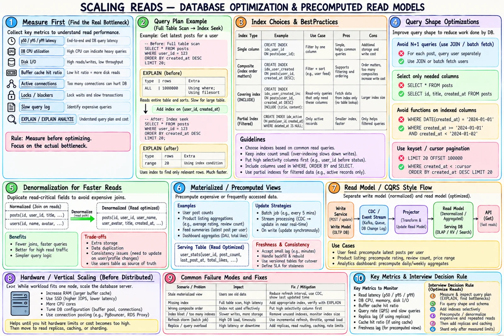

Topic · Scaling Reads
Database Read Optimization
The cheapest place to start: make one database efficient with better plans, indexes, query shapes, hardware, and precomputed read models.


Quick Revision
- Read the actual plan: scan type, estimated vs actual rows, spills, join order.
- Index the hot query: equality → range/order; validate it's used.
- Kill N+1, select only needed columns, cursor-paginate, bound fan-out.
- Scale up while it fits - simple, but has a ceiling and is still one node.
- Repeated joins/aggregates → denormalize or precompute; write model stays the truth.
Query plans and indexes
Use EXPLAIN / EXPLAIN ANALYZE to check full vs index scan, estimated vs actual rows, sorts spilling to disk, join type/order, nested loops, selectivity, and lock/I/O waits.
SELECT id, title, created_at FROM posts WHERE user_id = :user_id ORDER BY created_at DESC, id DESC LIMIT 20; CREATE INDEX idx_posts_user_created_id ON posts (user_id, created_at DESC, id DESC);
| Index | Best for | Cost |
|---|---|---|
| Single-column | Simple filters | Storage, write upkeep |
| Composite | Filter + sort | Column order matters |
| Covering | Index-only reads | Bigger index, more write amplification |
| Partial | Hot subset | Predicate must match |
| Full-text / inverted | Search terms | Separate pipeline, lag |
- Index high-value patterns, not every column; drop unused ones.
- Don't wrap indexed columns in functions without a functional index.
- Watch index bloat and cache residency.
Query shape and hardware
- N+1 - joins,
INbatching, data loaders, bulk APIs. - Payload - fetch only needed columns; skip blobs; no unbounded
SELECT *. - Pagination - cursor/keyset, not deep
OFFSET. - Filters - pre-filter before joining; bound response size and fan-out.
- Pools - don't push more active work than the DB can execute.
- Vertical scale - more RAM (buffer hit), NVMe (IOPS), CPU, network, tuned memory. Simple and often enough for a long time.
Denormalization and read models
source: posts(user_id, ...) + users(user_id, name, avatar, ...) read: post_view(post_id, user_id, user_name, user_avatar, title, created_at)
Fewer joins and predictable latency, paid for with duplicate data, write amplification, backfills, and temporary inconsistency.
Precompute: rating summaries, latest posts per user, feed candidates, dashboard aggregates, trending.
| Refresh | Freshness | Write cost | Complexity |
|---|---|---|---|
| Sync on write | Highest | Highest | Medium |
| CDC / event projection | Near real time | Moderate | High |
| Scheduled incremental | Bounded lag | Low | Medium |
| Full batch rebuild | High lag | Low online | Rebuild/backfill |
write service → OLTP DB → outbox/CDC → projector → denormalized store / search index / aggregates → read API
Version the projection, monitor lag, keep a rebuild path. Use CQRS when the read shape truly differs - not because it sounds scalable.
Trade-offs
| Choice | Benefit | Cost |
|---|---|---|
| Add an index | Far fewer rows scanned | Write amplification; may go unused |
| Covering index | No table lookup | Larger, costlier upkeep |
| Denormalize | Fewer joins | Duplication, backfills |
| Materialized view | Fast aggregates | Refresh lag, rebuilds |
| Vertical scaling | Simple, cheap at first | Ceiling; still one node |
Failure modes
- Redis before diagnosis - measure the path first.
- Index exists, still slow - low selectivity, wrong order, function on column, stale stats → read the plan.
- Too many indexes - slow writes; keep only high-value ones.
- Deep pagination slows - keyset pagination.
- N+1 explosion - batch, join, data loader.
- Pool becomes a queue - bound pool, fix query, admission control.
- Stale materialized view - monitor lag, retries/DLQ, replay, rebuild.
- Projection loses events - transactional outbox, checkpoints, dedupe, reconciliation.
Interview practice
Answer aloud, then reveal.
Queries slow as the dataset grows. What do you do?
Check the plan and rows scanned; fix indexes, N+1, pagination, columns; archive/partition old data; precompute aggregates. Replicas/cache only after the query is efficient.
When use search instead of DB indexes?
Full-text, complex filters, relevance, typo tolerance, frequent global queries. Accept async indexing and reconcile.
Schema changes with replicas and read models?
Expand-contract, backward-compatible readers, versioned projections and cache keys, canary, lag monitoring, backfill.
Why not always denormalize?
Duplicate data, write amplification, backfills, and temporary inconsistency - only for proven hot reads.